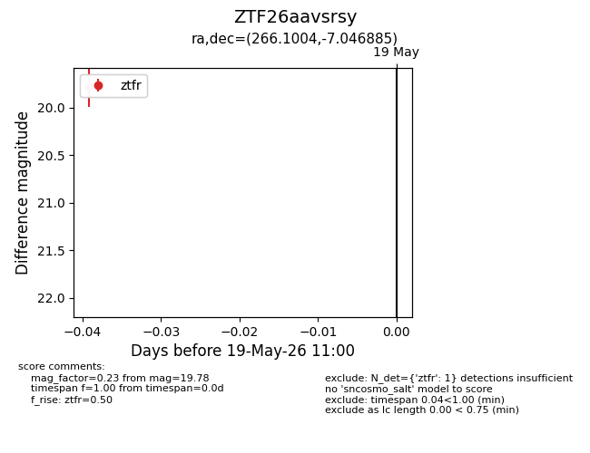
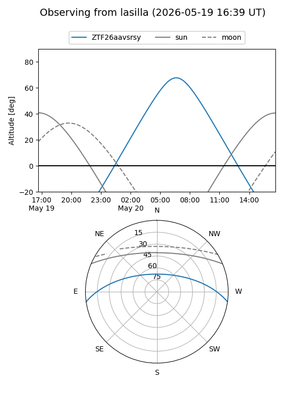
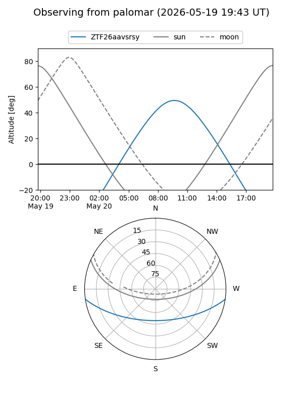

ZTF26aavsrsy
Target ZTF26aavsrsy at 2026-05-19 11:02
Aliases and brokers:
FINK: link
Lasair: link
ALeRCE: link
alt names
ZTF26aavsrsy (ztf,fink_ztf)
Coordinates:
equatorial (ra, dec) = 266.1004,-7.04689
equatorial (HMS+DMS) = 17:44:24.09,-07:02:48.79
galactic (l, b) = (18.7765,+11.46372)
Flags:
Photometry:
last ztfr=19.78
1 ztfr detections
Lightcurve

Visibility


Additional plots